Billing
1. Login to your Control Panel http://domain.indsoft.net/customer
2. Search for the domain name and proceed to the Order Information view.
3. Click the Name Servers link.
4. Enter upto 13 Name Servers and click Update Name Servers.
NOTE
Upon modifying your domain name's Name Servers, your website would begin appearing in a web browser, after about 24 to 48 hours (provided your Web Hosting package is properly setup and you have uploaded the content of your website). This is a standard time-frame required for a process called as DNS Propagation to complete Worldwide. This process is not controlled by any one ISP/company and therefore it can not be hastened.
Access the password retrieval system through the Forgot your Password? link on the Control Panel log in page. The password retrieval system requires your account username, which is a seven digit number (e.g., 0012345). The username is in the welcome email you received when you opened the account.
- Click the Forgot your Password? link.
- Enter your account username into the "Username" field and click "Submit."
- An email will be sent to the primary account contact. Click the link in the email (if you do not click the link within 24 hours, it will become invalid).
- When you visit the link a new login page will appear. Enter your username.
- A second email will be sent to the primary account contact containing a randomly generated password. Go back to the log in page and enter the new password.
The first time you log in to Control Panel with the randomly generated password you will be prompted to enter a new password. Entering a new password is optional. You may keep the randomly generated password if you choose to. You will only be prompted to change the password once.
Note that if you repeat steps 1 and 2 at any time a new request will be generated and the first request will be invalidated.
If you fail to receive the lost password messages, be sure to check your spam/junk/bulk email folder, as many spam filters will flag legitimate emails. If you are using spam filters, please whitelist the indsoft.com domain name.
If you do not know your account username, use the Forgot your Username? link on the Control Panel log in page. The username retrieval system requires your primary account email address. Note that you will receive login information for every account associated with the email address that you submit. If you enter an email address that is not associated with an account, you will not receive an email or an error message. We do not provide an "email address does not exist" error for security reasons.
If you do not have access to the primary email address for the account, we will require authentication of account information, typically the answer to the security question that you provided when the account was created. To insure customer privacy we cannot provide any account information without this authentication.
To begin the authentication process, send an email to billing@indsoft.com or support@indsoft.com. Include your domain name, and the answer to your security question in your initial email for speedier resolution. We will reset the account password and send you an email with a randomly generated password. Once you have logged in you can update your primary email contact.
Modifying the Whois (Contact Details) of Domain Names
Typically, Domain Name Contacts are of the following types:
Registrant Contact
Administrative Contact
Technical Contact
Billing Contact
In the system, Contacts are independent of a domain name. All contact information that you have used for registering any domain name, is maintained separately in a Contact database. This allows you to re-use the contact information for any other domain name registration without having to fill in all the values again. Think of this as linking Contacts from your Contact database to the domain names you register. Whenever you change any contact information in any Contact, it will automatically change that information in every domain name which uses that contact information and reflect the same immediately in the Whois lookup results of your domain name.
Whenever you change the contact information of a Registrant Contact that is associated with a Domain Name the contact change has to be approved by both the losing and the gaining registrant. The changes can also be authorized by a Designated Agent
What is Designated Agent (DA)
The ICANN Transfer Policy allows the sponsoring registrar to serve as a Designated Agent (DA). The Designated Agent is specifically authorized by the Prior Registrant and New Registrant to make any change on its behalf, through consent that must be obtained from both individually at least once by the sponsoring registrar.
When modifying the name and/or company and/or email address details of the registrant, the user will be provided two options:
Registrant Authorization not required -- Appoint Registrar as Designated Agent:
Registrar acts as Designated Agent and authorizes the change request. Under this option, the registrant cannot opt out of the 60-day lock. If both the Prior Registrant and New Registrant authorized the registrar to serve as DA, the change request will apply immediately. If only one has authorized the registrar to serve as DA, the change will only occur after the Prior Registrant or New Registrant, whichever is required, consents to the requested change.
Registrant Authorization required -- Maintain Status Quo:
As it currently is handled now, the Prior Registrant and New Registrant receive email messages asking to approve the change to the Registrant contact. Option to opt out of 60-day lock will be provided to the registrant.
Database Management
The Database Management tool allows you to update the database password and quota, monitor the storage usage of your database, backup and restore your databases, and provides an example connection string.
First you will need to install and connect phpMyAdmin through the App Installer:
https://support.winhost.com/kb/a1625/how-to-install-phpmyadmin.aspx
Once you have connected, select the database to be backed up from the panel on the left hand side and then click "Export"
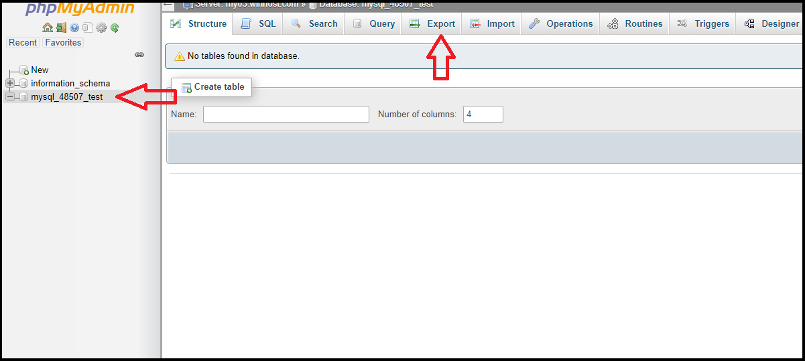On the next screen you can choose either "Quick" or "Custom" if you need to specify certain settings for the backup. Click Go and you will be given the .sql backup file
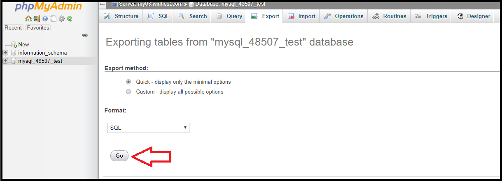If you accidentally bring your SQL database offline and cannot connect to the SQL Server, here's how to bring it back online.
- Open Management Studio and in the "Connect to Server" dialog box enter your connection parameters
- Click the "Options >>" button and navigate to the "Connections Properties" page
- In the "Connect to database" dialog box type the word master.
- Open up a New Query window and paste the following T-SQL code into it:
USE [master]
GO
ALTER DATABASE [DB_123_database] SET ONLINE
GOReplace DB_123_database with your actual database (the one you are trying to bring online)
- Execute the code
- If the code executed successfully, but you do not see the change in your database status, disconnect from the server and connect again. This time, you can connect to your default database instead of master.
DNS
More and more organizations are moving from the shorter 384, 512 and 768-bit keys up to 1024 and higher in order to protect against spoofing because the smaller keys are easier to crack. Our DNS system intuitively supports a 2048-bit key and larger. Simply paste it into the TXT record and hit save. Our back-end systems do what’s needed to break it up into 255 byte chunks to comply with RFC 1035, section 2.3.4 so you don’t have to do anything.
You can test your DKIM after creating it using the handy tool here: http://dkimcore.org/c/keycheck This tool will show you how it joins the two parts into one key.
If you encounter any issues, please feel free to submit a support ticket. We’re here 24×7 to help!
Email Support
SSL/TLS are security protocols that allows the transmission of data to be encrypted. This allows users to access email through a third-party email client without the fear that someone has intercepted their data. SSL will encrypt the connection immediately upon connection. TLS will encrypt once the STARTTLS command is sent. TLS will need to be set up over port 25, 110, 143 and SSL over ports 465, 993, and 995.
NOTE: This article assumes you have obtained a copy of the certificate from your SSL provider and have installed it on your server within your certificate stores personal folder. If you have not done this, please do so prior to following the directions below.
Prior to configuring SmarterMail to be secured over SSL or TLS, the SSL certificate installed on the server must first be exported to a PFX file that is password protected and contains the certificates private key information.
Follow these steps to export your SSL certificate to a PFX certificate file:
- Open up Microsoft Management Console (MMC)
- CTRL + M to add new Snap In -> Certificates -> Select Local Computer
- Expand Personal
- Expand Certificates
- Right click the Desired Certificate, select All Tasks -> Export
- In the new window that pops up Hit Next
- Select Yes, Export the Private Key and hit Next
- Enter in the desired password and hit next.
- Ensure Personal Information Exchange -PKCS #12 (PFX) is checked and also include all certificates in the certification path if possible and select next
- Enter in the path and name where you would like the certificate saved such as C:\SmarterMail\Certificates\mail.domain.com.pfx and click finish.
Follow these steps to add a port to listen over SSL or TLS:
- Log in to SmarterMail as the system administrator.
- Click the Settings icon.
- Click Bindings in the navigation pan and click the Ports tab.
- Click New in the content pane.
- Complete the following required fields: Protocol, Encryption (SSL or TLS), Name, Port, Certificate Path and password. All other fields are optional.
- Select the IP Address for the port to listen on.
- Click Save.
NOTE: Using similar steps as above, modify your existing standard ports (25, 110, 143, etc) to be encrypted with SSL or TLS.
It is possible to secure the SmarterMail ports for different domains/certificates as well. The ports can be secured in two ways, one requiring a Unified Communications Certificate (UCC) and one method requires a unique IP address for each domain.
- For UCC configurations, the certificate can be configured to secure a variety of hostnames within it's SAN field, for example mail.domainA.com, mail.domainB.com, mail.domainC.com, etc. This certificate can then be exported following the instructions above and configured within SmarterMail to secure multiple domains.
- If there are unique IP addresses assigned for each domain, each domain would need to have their own unique set of ports tied to the proper certificate and IP for the domain in question. For example, the administrator will need to create a set of port mappings for 25 (TLS), 110 (TLS), 143 (TLS), 465 (SSL), 993 (SSL), 995 (SSL), when creating these ports makes sure to add a description to indicate which domain these port mappings belong to and point these ports to the proper certificate location. Next these ports would need to be configured to listen on the IP Address assigned to the domain being configured. This process will need to be repeating for each Domain\IP that needs to be secured for the given domain.
Creating a new email account in webmail.
Step 1: Login to your webmail account
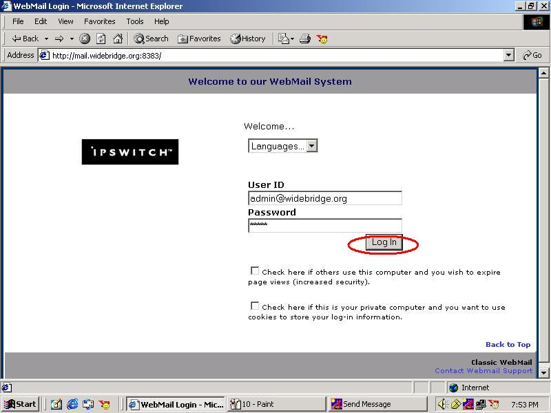Step 2: Click on the highlighted dropbox menu
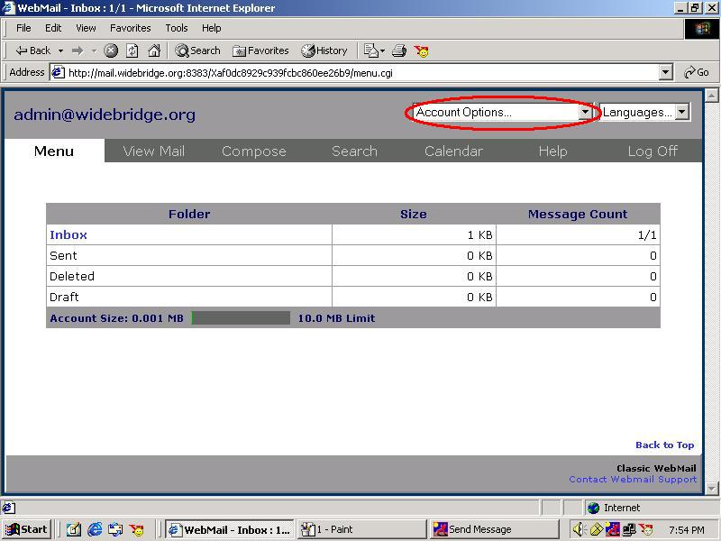Step 3: Select User Administration option from the dropbox menu
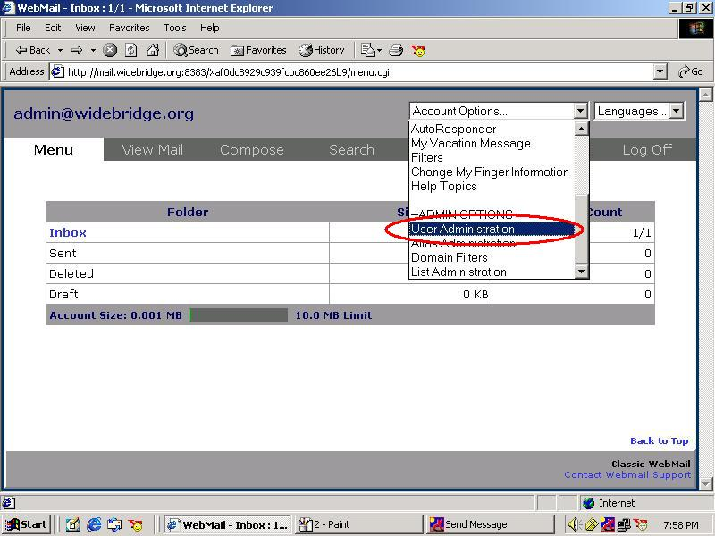Step 4: Click on add button which is highlighted to create a new user
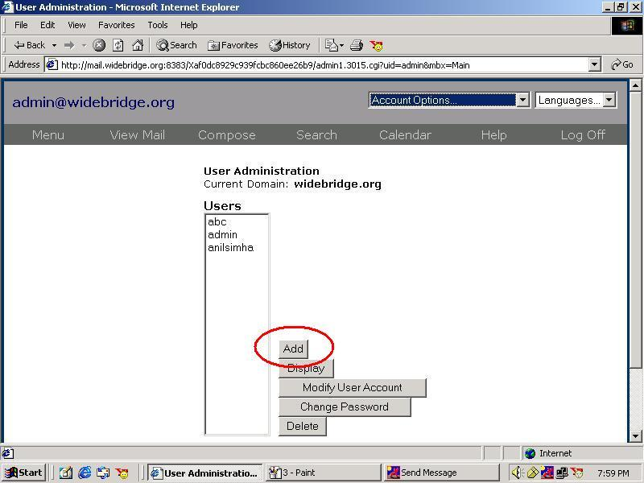Step 5: After filling new user info click on save
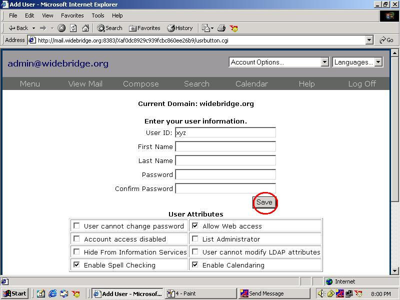Step 6: Your new user is now added successfully
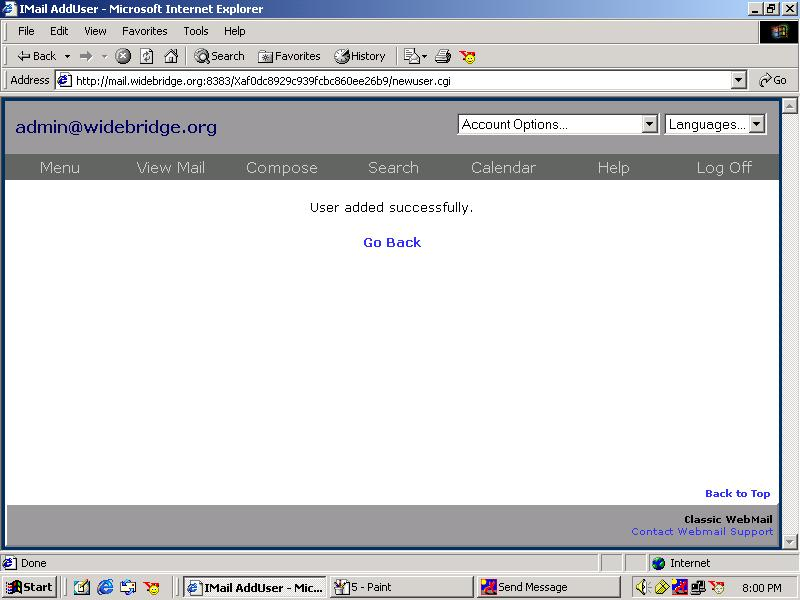When an account has been compromised, the spammer will try to send as much spam as possible though the server. This can cause a number of issues, including getting a domain or IP address blacklisted. Accounts can get compromised a number of ways, the most common of which is when the account is using a weak, insecure password.
There are a few ways administrators can become aware of when an account has been compromised, including by noticing the mail server spool filling up, causing both incoming and outgoing messages to be delayed. When this happens, administrators can review the Spool Dashboard or traffic reports in order to find the compromised domain and account being used to send the large amount of email.
Follow these steps to find the compromised account by reviewing the Spool Dashboard:
- Log into SmarterMail as an Administrator.
- Within the Manage section, click on Spool in the navigation pane.
- In the Overview tab, look at the Top Outbound Senders section to find any anomalies in outbound deliveries. If an account has been compromised, it will likely be the first in the list with the most deliveries. (The spool dashboard updates every 20 seconds for a real-time look at the spool.)
- Determine whether the messages are valid emails or spam. This can be done in two ways. a.) Click on the Spool tab and use the search bar to find messages sent by the suspected user account. b.) Click on the Actions menu in the spool overview to Move Messages sent by the user (that are currently held in the spool) to their own folder on the server. Review the messages.
- If the messages are found to be spam, use the Delete Messages action to delete the remaining messages in the spool sent by that user.
- If the account is determined to be compromised, you can also temporarily disable the account, preventing future email from being sent out. Use the Disable User action to disable the user's account but still allow it to receive mail. Alternatively, you can navigate to the user's settings to change the User Status to 'Disable and don't allow mail'.
- Look at the Top Outbound IP Addresses section to find any anomalies in outbound deliveries. Spammers may send messages through just one user account; however, they may authenticate using various IP addresses.
- Repeat steps 5 and 6 to determine the legitimacy of the messages and take actions against them, if necessary.
- If an IP Address is in violation, use the Blacklist IP action to add the IP address to the STMP Blocked list. (The IP will be blocked on SMTP only.)
Follow these steps to find the compromised account by reviewing reports:
- Login to SmarterMail as an Administrator.
- Click on the Reports icon.
- Select Message Traffic and change the mode from Trend to Domains.
- This report will list all domains on the server and display the number of incoming and outgoing messages for each. The domain with the compromised account will generally be the one with the most outgoing messages.
- Clicking on the domain will display the Message Traffic report for users on that domain. From here, make sure the report Mode is set to Users (not Trend), and you can narrow down the one (or more) users sending the largest amount of email.
The next steps are generally up to the administrator. They can either Manage the domain and change the user's password, disable the user or delete the account entirely to stop the spammer from relaying though the server.
Remote Desktop Management
Step 1:
Click the Start button on your local PC, At the foot of your start menu you will see a text box (this will be named Run or search depending upon the version of windows you are using). Enter mstsc into this text box and click [ENTER] on your keyboard.
Step 2:
The Remote Desktop Connection wizard window will open. If you would like to share resources with the remote computer, expand the Options section.
Step 3:
Click on the Local Resources tab. In the Local devices and resources section click More.

Step 4:
A list of your drives will appear. Select any drives that you would like to access while connected to your remote server and click OK.

Step 5:
Select the General tab and enter the IP address of your server in the Computer text box.
Server
In this article, we will show you how to mount an ISO file on your Indsoft dedicated server using the dedicated server KVM.
1. Connect to the KVM
2. Click the “Virtual Media” menu.
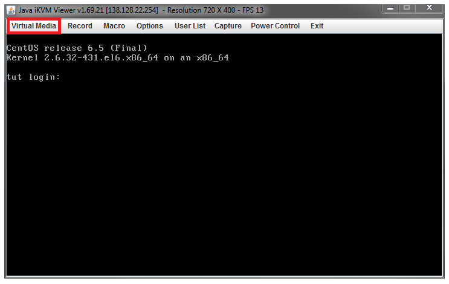3. Click the “Virtual Storage” button found in the drop-down menu.
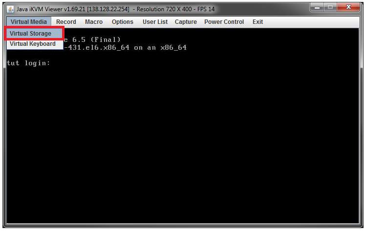4. Select “ISO File” from the “Logical Drive Type” menu.
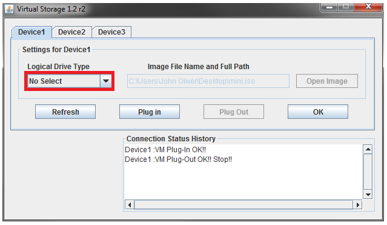5. Click the “Open Image” button and locate the ISO file you wish to use.
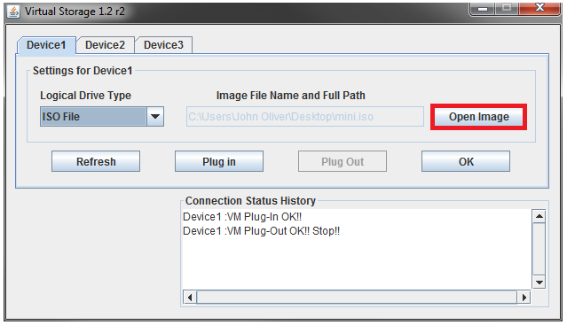6. Click the “Plug in” button.
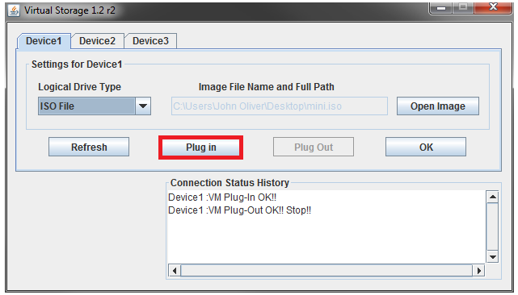7. Click the “OK” button.
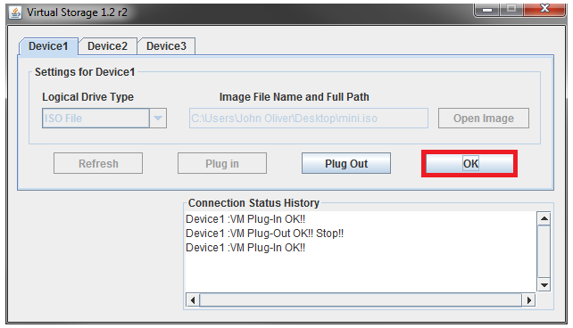That’s it! You have mounted your ISO file. You should be able to access the “drive” as you would if it was plugged in directly to the server.
In an ever changing digital landscape, personal and business owners of all sizes that are hosting data online must remain vigilant. There are a variety of ways in which a Hybrid or Dedicated Server may be taken offline. One of the most prevalent ways to bring a business offline is through the use of a DDoS attack.
In 2017, a DDoS attack aimed at PlayStation servers brought down several major services, blocking user access to Netflix, Amazon, and others throughout the northeastern parts of the US.
But what is a DDoS attack and how can server administrators and businesses prevent DDoS attacks from crippling their business? In this article, we'll provide you all the resources you need to understand what DDoS attacks are, how they can impact your business, and how to setup DDoS protection today.
What Is a DDoS Attack?
Before we can understand how to prevent a DDoS attack, we must first understand what it is. DDoS stands for Distributed Denial of Service and it is a coordinated attack against one server or network in which dozens, hundreds, or even thousands of devices send fake traffic to one server in an attempt to bring the server or network offline. How this is actually accomplished varies depending on the DDoS attack type, which we will explore below.
What a DDoS attack means for genuine website visitors is that when they attempt to navigate a website, the server will be so congested with traffic that they will typically see a server error page and will be unable to browse the site. This could mean that visitors are unable to purchase your products or services or manage their accounts, which can be very costly for businesses.
DDoS attacks range in severity and length. They can be as little as a few gigabytes per second and up to several hundred gigabytes. The larger the DDoS attack, the more difficult it can be to stop it.
Why Do DDoS Attacks Exist?
The vast majority of DDoS attacks are a targeted action against an organization. Hackers will reach out to an organization and demand a ransom payment to be paid (typically via bitcoin) or else the group will begin a DDoS attack against the company. This is often a bluff, but at times these groups will begin the attack as they claimed.
Businesses would be ill advised to pay any ransom to these groups as they are likely to keep coming back for more if they have a victim who is willing to comply. If you receive a notice like this, take the opportunity to deploy DDoS protection on your servers to prevent any downtime that may arise on unprotected servers.
What are the Impacts of a DDoS Attack?
To understand how critical DDoS protection is to your business, think about the impact of your website going down for hours or even days. How would that affect your sales? How many prospective clients would you lose?
If a company generates, say, $5,000 in sales on an average day, one DDoS attack could cost the company over $15,000. That's a big hit for a small business. These attacks are also typically conducted during peak business hours, and attackers try to sustain the attacks as long as possible.
DDoS attacks also affect your brand's reputation. Users won't know you're the victim of an attack. All they know is that they visited your site but couldn't get through because your servers were down.
How Do DDoS Attacks Work?
The methods utilized in performing a DDos attack vary based on the type of attack. Here are the most common methods used to attack a server:
SYN Flood
The victim server receives spoofed SYN requests with fake IP addresses. This attack overwhelms system resources as the server tries to interpret the incoming packets which are coming in at a high rate.
SYN-ACK Flood
The victim server receives spoofed SYN-ACK packets at a high packet rate, resulting in depleted system resources as the server tries to respond to these packets.
Fake Session
This attack fakes a complete TCP communication and is designed to fool new defense tools that only monitor incoming traffic to the network.
DDoS attackers utilize one of a variety of attack types, or a combination, in an attempt to bring a server offline and bypass any DDoS protection that may be in place. That's why it's important to have a DDoS Protection plan which can guard against all attack types.
How to Protect Against DDoS Attacks
As you can see, DDoS attacks are fairly common and have a significant impact on business. Luckily, there are a few ways to protect against DDoS attacks and stop a DDoS attack from ever occurring.
DDoS Protected Hosting
The best way to stop a DDoS attack before it even begins is to equip every server in your fleet with DDoS protection. DDoS protected hosting utilizes a hardware device between your server and the internet and filters all traffic in order to prevent any type of DDoS attack from occurring.
DDoS Protection utilizes devices designed by RioRey, a leader in DDoS mitigation appliances. DDoS attacks are typically detected and mitigated within 0 to 90 seconds. This allows legitimate traffic to continue to reach the server, even when a DDoS attack is ongoing.
DDoS protected hosting is a small monthly fee in addition to the standard server rental and it ensures your server is protected from attack. This is more of a proactive approach rather than having to jump into defense mode after an attack has started.
Our enterprise-grade DDoS protection service protects against the most common DDoS attack types, including:
- UDP Flood
- SYN Flood
- SYN-ACK Flood
- ICMP Flood
- DNS Reflection Flood
- Fake Sessions
- Synonymous IP
- Misused Application Attack
If you're looking for the best way to prevent a DDoS attack, a dedicated DDoS protection device in place at all times is the most effective solution. Some businesses choose to implement hardware mitigation only once an attack has started, but the damage of the attack has often already occurred and it can be several hours before a hardware device can be in place.
Maintaining Server Security Best Practices
Aside from investing in DDoS protected hosting, maintaining proper server security procedures is another way to limit the impacts of a DDoS attack. These include:
- Limiting access to internal systems from devices outside of the network
- Keeping systems up to date
- Maintaining proper password management strategies
Every server on the internet is constantly vulnerable to intrusion by nefarious users. It’s important that server administrators take action as soon as they setup a server to protect their server.
In this tutorial, we will outline some common steps for securing a Linux server. Commands in this tutorial will be based on CentOS 7, but they can be applied to most Linux distributions
Update System Packages
The best linux server security tip and key defense against attack is an up to date system that only contains packages actively being used by your applications.
If there is a service running that you don’t need, this leaves you unnecessarily vulnerable.
To update system packages and delete obsolete ones, run:
yum updateTo upgrade to the next major version of a package, and delete obsolete packages run:
yum upgradeConfigure Automatic Updates
If you have a system which uses common applications that aren’t easily broken by routine system updates, you may wish to consider setting up automatic updates to improve linux server security. This is a useful server security tip for systems that you don’t regularly connect to.
To setup daily automatic updates, install yum-cron:
yum -y install yum-cronConfigure the package according to your needs:
vi /etc/yum/yum-cron.confStart and enable the service on boot:
systemctl start yum-cron systemctl enable yum-cronThis application will be added to your daily crontab to install updates automatically for you.
Maintain An Active Firewall
Installing and maintaining a firewall is a great way to close up ports that don’t need to be open, further enhancing server security. We recommend iptables for this case.
To install iptables:
yum install iptables-servicesSet iptables to run on startup:
systemctl enable iptablesIPTables is now ready to be used For example, you can block an external IP with the following command:
iptables -A INPUT -s 192.168.0.10 -j DROPTo save rules permanently use the following command:
service iptables saveDisable Root Login over SSH
Disabling root login locks down a common source of brute-forcing. Attackers will now need to know a unique system user and password before gaining entry to your server.
To disable root login, follow these steps:
Add a user which will have SSH access and set the password:
useradd billjohnson passwd billjohnsonAdd this user to have sudo access to run root commands:
visudoAdd the following line to this file and save it, replacing username with the user:
username ALL=(ALL) ALLOpen the following file in a text editor
vi /etc/ssh/sshd_configLocate the following line:
#PermitRootLogin yesChange it to the following:
PermitRootLogin noAdd the following line, then save and close the file:
AllowUsers usernameRestart SSH:
service sshd restartRoot access is now disabled over SSH, providing additional server security from intrusion
Set Secure Password Policies
Enforcing strict user password rules is a great way to ensure you are not vulnerable to system entry through the use of weak passwords.
Update the following file to set stricter password controls:
vi /etc/security/pwquality.confConclusion
There are hundreds of ways to secure a Linux server. We’ve outlined a few of the popular ones, but every application is specific. We provide complete server hardening and proactive monitoring to keep your server running at its best.
Every server connected to the public internet is vulnerable to intrusion. It’s important to implement basic security procedures when you first setup a Windows Server to ensure it is secure from attack.
This article will outline some key ways to secure your Windows Server.
Download All Available Updates
Most servers are installed with an image of Windows Server that may not have all of the latest security and performance updates installed As soon as you receive the credentials for your Windows Server, make sure to login and install all available updates.
Set Firewall Rules
Locking down open ports is an easy way to prevent unauthorized access to a server. Consider removing as many firewall rules as possible which will close all of the ports you are not using for your applications.
You’ll want to ensure that common ports like 3389 for remote desktop access and port 80 for web traffic are open as needed so that your applications can continue to run as expected.
Set Strong Password Policies
If many users are connecting to your Windows Server, especially novice users, consider enforcing a strong password policy. We recommend having a minimum password length and complexity as well as a password expiration policy.
You will also want to only provide users with the admin access level required for their access to the server. Having multiple people with admin privileges who don’t need it is a recipe for disaster.
The most common form of server intrusion is through weak passwords, so it’s important that every user has a strong password set with the correct user privileges.
Disable File Sharing
Windows Server file sharing has historically been a point of compromise for many servers due to the ports that must remain open for this purpose. Unless absolutely required, we recommend disabling file sharing.
Backup Your Server
The best way to truly secure a server is understanding that no technology is perfect, and even with the best implemented security policies, things happen. Maintaining routine full server backups gives you the peace of mind knowing that you can easily restore the data when you need it. Equally as important to performing backups is testing to ensure the restoration of backups works perfectly and is a known process. There is nothing worse than realizing the only backup of a server has been corrupt all along.
Conclusion
There are many ways to secure a Windows Server. We’ve outlined some of the most important aspects, but there are so many other things you should consider.
WHM CPanel
In this article, we will show you how to login to cPanel.
1. Login to cPanel by visiting the url: https://cp.space2let.com:2083 for clients and https://cp.space2let.com:2087 for admin.
2. Enter your cPanel Username.
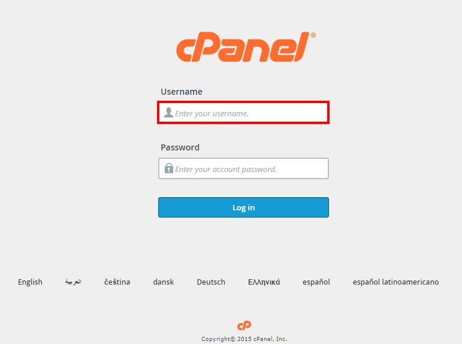3. Enter your cPanel Password.
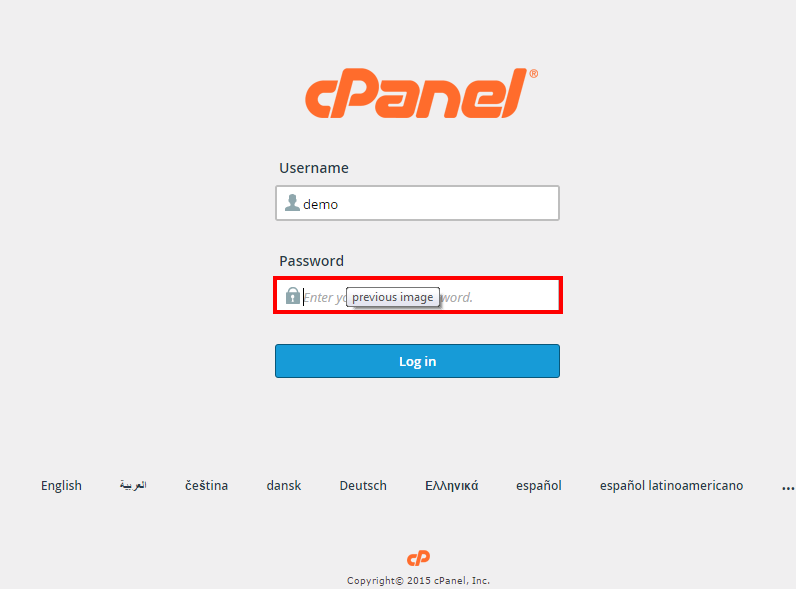4. Click the Log in button.
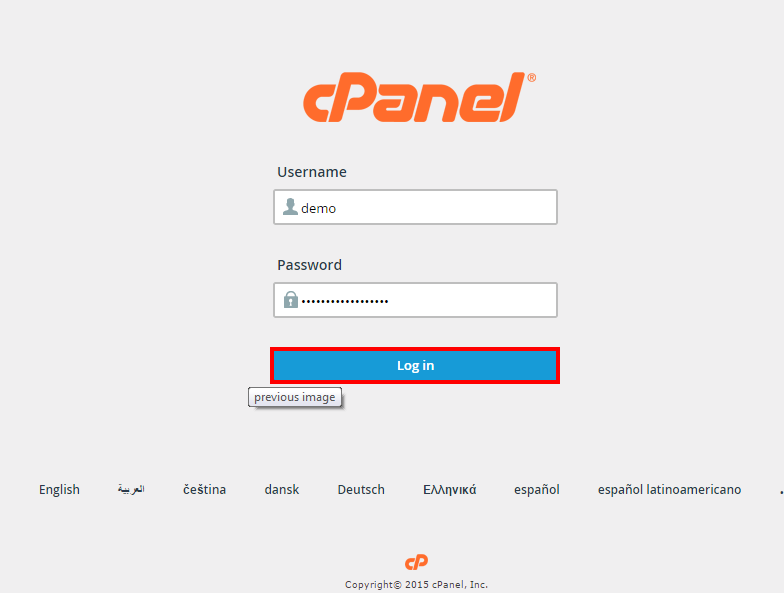That’s it! You now know how to login to cPanel.
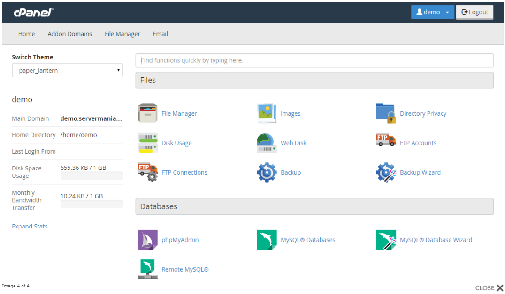In this article, we will show you how to login to cPanel.
1. Login to cPanel by visiting the url: https://cp.space2let.com:2087.
2. Click the FTP Accounts link in the FIles section of cPanel.
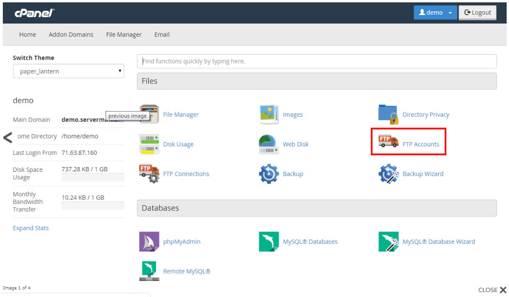3. Click the Delete button for the account you wish to delete.
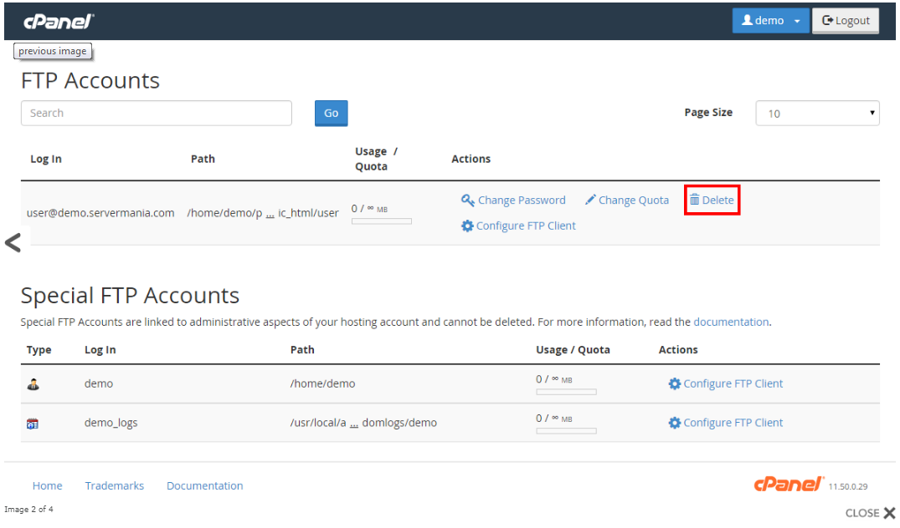4. If you wish to delete the user’s home directory, you can do so by selecting the option. Please be aware that this will DELETE everything found in the users home directory. Please use with caution.
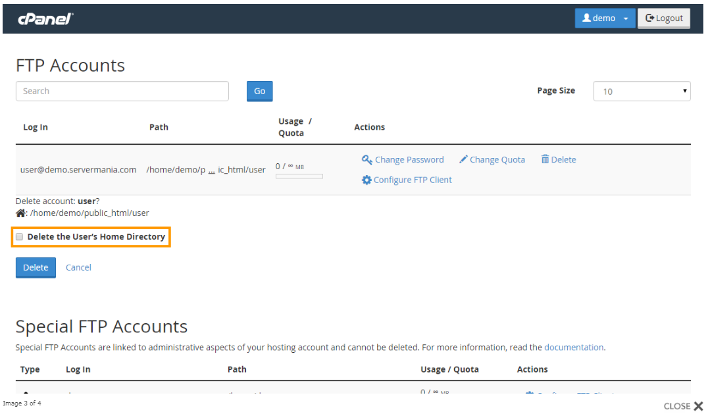5. Click the Delete button.
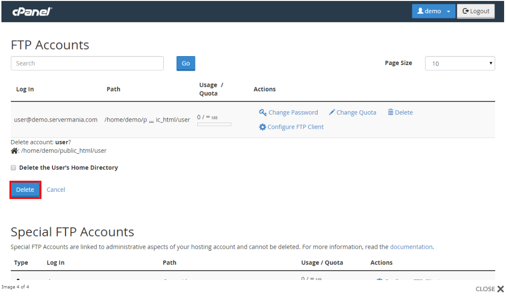In this article, we will show you how to access the FTP client configuration information. This information will help you connect to FTP using your FTP client.
1. Login to cPanel by visiting the url: https://cp.space2let.com:2087 for clients and https://cp.space2let.com:2087 for admin.
2. Click the FTP Accounts link in the Files section of cPanel
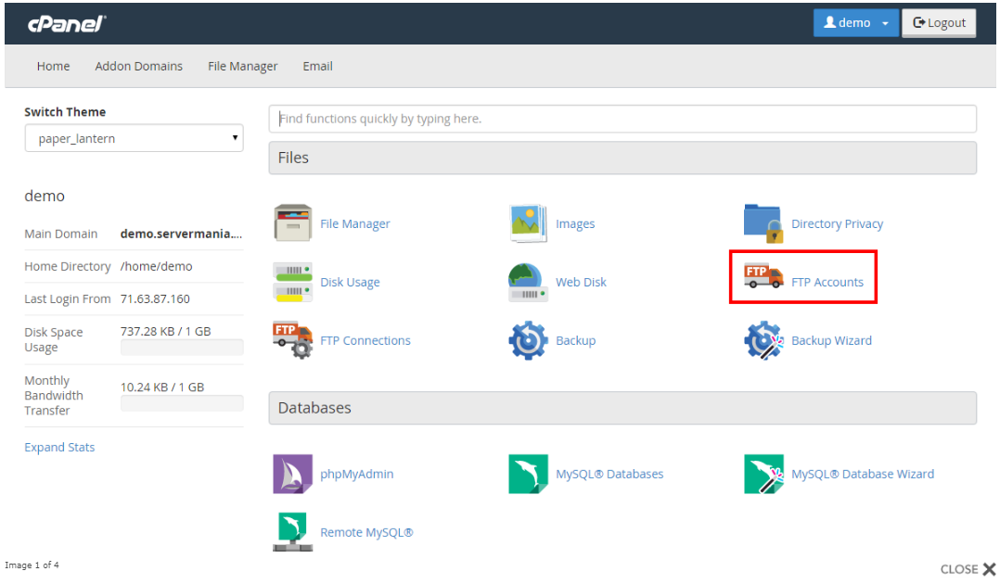3. Click the Configure FTP Client button.
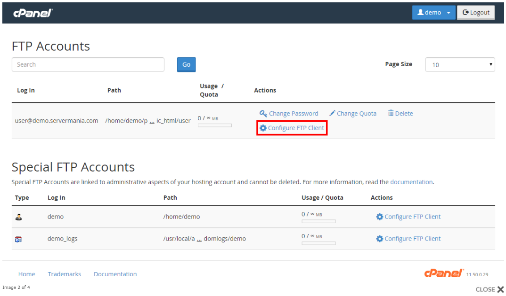Here you can see the settings for manually configuring your client.
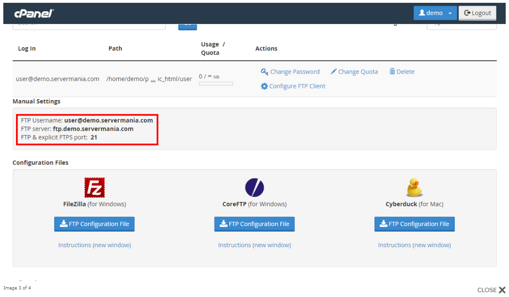In addition, if you use FileZilla, CoreFTP or Cyberduck, you can download the configuration file here.
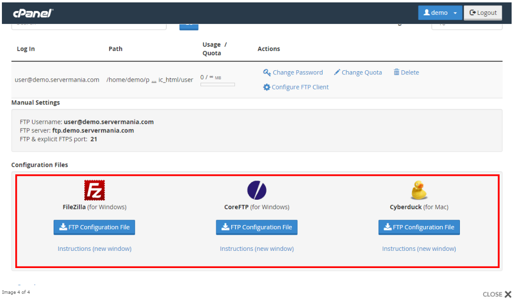Web Help
Log in to "Control Panel" and go to the FTP Users section
Click "Add"
Create a new user by entering the required information in the blank fields
Use the "Directory Path field to restrict a FTP" user to one specific sub directory
Click the "Permissions" box to determine what kind of file permissions this FTP user will have
Click Create to "Finish
By default, SmarterStats installs a basic Web server that allows administrators to start using the application immediately after installation. However, SmarterTools recommends moving to a more robust and secure Web server, such as Microsoft IIS.
The instructions for setting up SmarterStats as an IIS site differ slightly depending on what version of IIS you're on. Only the instructions for IIS 7.0 are described below.
NOTE: This topic assumes that you are familiar with IIS and how it works. SmarterTools recommends that you use the Web server included with SmarterStats if you are unfamiliar with or uncomfortable using Microsoft IIS.
Applies to SmarterStats 6.x-11.x
This article covers the following:
- Disabling the SmarterStats Web server
- Adding a new application pool for SmarterStats
- Adding SmarterStats to IIS
- Verifying IIS Settings
- Updating DNS
- Testing the site
Disabling the SmarterStats Web Server
These steps will stop and disable the default web server that is included with SmarterStats. This will also have the side-effect of disabling any shortcut for SmarterStats that may be placed on your desktop until you update it with the new URL for the SmarterStats site created in IIS.
- Click on Start ->Programs -> SmarterTools -> SmarterStats -> Configure SmarterStats Web Server
- Click on the Stop button
- Change the Startup Mode to Disabled
- Click on the Apply button
- Click the Close button
NOTE: You can also stop and disable the SmarterStats Web server from within the Services administrative tool if you are more comfortable using the Windows Server admin tool set.
Add an Application Pool
Follow these steps to add an application pool specifically for SmarterStats:
- Open Internet Information Services (IIS) Manager
- Right click on Application Pools from the tree view and choose Add Application Pool
- Name the new application pool SmarterStats, or something similarly easy to identify
- Set the .Net Framework to .NET 4.5 (Versions 10.x and earlier support .NET 4.0)
- Set the Application Pools Managed Pipeline to 'Integrated'
- Make sure "Start application pool immediately" is checked
- Click OK
Add SmarterStats to IIS
Follow these steps to add SmarterStats to IIS:
- Open Internet Information Services (IIS) Manager
- Click on your ServerName, and on the right side, under IIS, double-click ISAPI and CGI Restrictions
- Verify that ASP.NET v4.5 is allowed. If not, right click on ASP.NET v4.5.x and select Allowed. (Versions 10.x and earlier support .NET 4.0)
- On the left side of the page, right click on Sites in the tree view and choose Add Website
- Name the site SmarterStats
- If you created an Application Pool name other than SmarterStats, click Select and choose the correct Application Pool
- For the physical path, browse to the SmarterStats -> MRS folder. The default location is C:\Program Files (x86)\SmarterTools\SmarterStats\MRS
- For Binding, choose an IP address to use for Webmail. If this IP address is shared with another Web site, you will need to use a different port or Host Headers. For more information about using Host headers, refer to the IIS documentation
- Make sure "Start Web site immediately" is checked
- Click OK
Verify IIS Settings
Follow these steps to verify the IIS settings. Please read each item carefully.
- In IIS Manager, click on your ServerName
- Under IIS, double click ISAPI and CGI Restrictions
- Verify that ASP .NET v4.5 is allowed. If it is not, right-click on ASP .NET v4.5 and select Allowed. (Versions 10.x and earlier support .NET 4.0)
- In the tree view, click Sites
- Expand (or double click) the SmarterStats site
- Click on the App_Themes folder
- Under IIS, double click HTTP Response Headers
- Under the Action menus, click Set Common Headers
- Enable the Expire Web content setting
- Click After
- Add 7 for the number of days
- Click OK
- Click on Application Pools in the tree view
- Right click on the SmarterStats application pool and select Advanced Settings
- Under the Process Model heading, ensure the the Identity is set to the NetworkService account
- From the Start menu, open Administrative Tools and select Services, then verify that the World Wide Publishing Service is running
Update DNS
If any sites are already set up with SmarterStats, make sure to update their DNS records to point to the new IP address.
Test the site
Open up your browser and type the IP address of the site you just added.
By default, SmarterStats installs a basic Web server that allows administrators to start using the application immediately after installation. However, SmarterStats recommends moving to a more robust and secure Web server, such as Microsoft IIS. Setting up SmarterStats as an IIS site is a multistep process and differs slightly depending on what version of IIS you're on. Only the instructions for IIS 8.0 are described below.
NOTE: This topic assumes that you have IIS installed and are familiar with how it works. It is also recommended to be up to date with all software patches. If you are unfamiliar with or uncomfortable using Microsoft IIS you can use the Web server included with SmarterStats; however, the default Web server is not meant for production environments.
Applies to SmarterStats 10.x - 11.x
Disable the SmarterStats Web Server
Follow these steps to stop and disable the default Web server that is included with SmarterStats. This will also have the side-effect of disabling any shortcut for SmarterStats that may be placed on your desktop until you update it with the new URL for the SmarterStats site created in IIS.
- Click on Start > Programs > SmarterStats > SmarterStats > Configure SmarterStats Web Server
- Click on the Stop button
- Change the Startup Mode to Disabled
- Click on the Apply button
- Click the Close button
NOTE: You can also stop and disable the SmarterStats Web server from within the Services administrative tool if you are more comfortable using the Windows Server admin tool set.
Add IIS ISAPI Components
Follow these steps to add the necessary IIS components:
- Open up IIS
- When prompted Launch Internet Information Services (IIS) Manager
- Click on Products tab
- Click on Servers
- Install required components of: IIS: ASP.NET, .NET Extensibility, ASP, CGI, ISAPI Extensions, ISAPI Filters
- Install any other options components
- Click Install
Add an Application Pool
Follow these steps to add an application pool specifically for SmarterStats:
- Open Internet Information Services (IIS) Manager
- Right click on Application Pools from the tree view and choose Add Application Pool
- Name the new application pool SmarterStats, or something similarly easy to identify
- Set the .Net Framework Version to v4.5.x (Versions 10.x and earlier support .NET 4.0)
- Set the Application Pools Managed Pipeline to 'Integrated'
- Make sure "Start application pool immediately" is checked
- Click OK
Add SmarterStats to IIS
Follow these steps to add SmarterStats to IIS:
- Open Internet Information Services (IIS) Manager
- Click on your ServerName, and on the right side, under IIS, double-click ISAPI and CGI Restrictions
- Verify that ASP.NET v4.5 is allowed (If not, right click on ASP.NET v4.5.x and select Allowed) (Versions 10.x and earlier support .NET 4.0)
- On the left side of the page, right click on Sites in the tree view and choose Add Website
- Name the site SmarterStats
- If you created an Application Pool name other than SmarterStats, click Select and choose the correct Application Pool
- For the physical path, browse to the SmarterStats -> MRS folder. The default location is C:\Program Files (x86)\ SmarterTools\ SmarterStats\MRS
- For Binding, choose an IP address to use for Webmail. If this IP address is shared with another Web site, you will need to use a different port or Host Headers. For more information about using Host headers, refer to the IIS documentation
- Make sure "Start Web site immediately" is checked
- Click OK
Verify IIS Settings
Follow these steps to verify the IIS settings. Please read each item carefully.
- In IIS Manager, click on your ServerName
- Under IIS, double click ISAPI and CGI Restrictions
- Verify that ASP .NET v4.5 is allowed. If it is not, right-click on ASP .NET v4.5 and select Allowed. (Versions 10.x and earlier support .NET 4.0)
- In the tree view, click Sites
- Expand (or double click) the SmarterStats site
- Click on the App_Themes folder
- Under IIS, double click HTTP Response Headers
- Under the Action menus, click Set Common Headers
- Enable the Expire Web content setting
- Click After
- Add 7 for the number of days
- Click OK
- Click on Application Pools in the tree view
- Right click on the SmarterStats application pool and select Advanced Settings
- Under the Process Model heading, ensure the the Identity is set to the NetworkService account
- From the Start menu, open Administrative Tools and select Services, then verify that the World Wide Publishing Service is running
Applies to SmarterStats 6.x-9.x
Disable the SmarterStats Web Server
Follow these steps to stop and disable the default Web server that is included with SmarterStats. This will also have the side-effect of disabling any shortcut for SmarterStats that may be placed on your desktop until you update it with the new URL for the SmarterStats site created in IIS.
- Click on Start -> Programs -> SmarterStats -> SmarterStats -> Configure SmarterStats Web Server
- Click on the Stop button
- Change the Startup Mode to Disabled
- Click on the Apply button
- Click the Close button
NOTE: You can also stop and disable the SmarterStats Web server from within the Services administrative tool if you are more comfortable using the Windows Server admin tool set.
Add IIS 6 Management Compatibility
- Open ServerManager
- Click on Dashboard
- Click on Add Roles and Features
- Click Next and then next again
- Select server name and then next
- Expand Web Server (IIS) then expand IIS 6 Management Compatibility
- Enable IIS 6 Management Console
- Click Next and Next again
- Click Install
NOTE: IIS 6 Management Compatibility needs to be installed for SmarterStats to import logs from the Import From IIS feature.
Add IIS ISAPI Components
Follow these sets to add the necessary IIS components.
- Open up IIS
- When prompted Launch Internet Information Services (IIS) Manager
- Click on Products tab
- Click on Servers
- Install required components of: IIS: ASP.NET, .NET Extensibility, ASP, CGI, ISAPI Extensions, ISAPI Filters
- Install any other options components
- Click Install
Add an Application Pool
Follow these steps to add an application pool specifically for SmarterStats:
- Open Internet Information Services (IIS) Manager
- Right click on Application Pools from the tree view and choose Add Application Pool
- Name the new application pool SmarterStats, or something similarly easy to identify
- Set the .Net Framework Version to v4.5.x (Versions 10.x and earlier support .NET 4.0)
- Set the Application Pools Managed Pipeline to 'Integrated'
- Make sure "Start application pool immediately" is checked
- Click OK
Add SmarterStats to IIS
Follow these steps to add SmarterStats to IIS:
- Open Internet Information Services (IIS) Manager
- Click on your ServerName, and on the right side, under IIS, double-click ISAPI and CGI Restrictions
- Verify that ASP.NET v4.5 is allowed. If not, right click on ASP.NET v4.5.x and select Allowed. (Versions 10.x and earlier support .NET 4.0)
- On the left side of the page, right click on Sites in the tree view and choose Add Website
- Name the site SmarterStats
- If you created an Application Pool name other than SmarterStats, click Select and choose the correct Application Pool
- For the physical path, browse to the SmarterStats -> MRS folder. The default location is C:\Program Files (x86)\ SmarterTools\ SmarterStats\MRS
- For Binding, choose an IP address to use for Webmail. If this IP address is shared with another Web site, you will need to use a different port or Host Headers. For more information about using Host headers, refer to the IIS documentation
- Make sure "Start Web site immediately" is checked
- Click OK
Verify IIS Settings
Follow these steps to verify the IIS settings. Please read each item carefully.
- In IIS Manager, click on your ServerName
- Under IIS, double click ISAPI and CGI Restrictions
- Verify that ASP .NET v4.5 is allowed. If it is not, right-click on ASP .NET v4.5 and select Allowed. (Versions 10.x and earlier support .NET 4.0)
- Click on Application Pools in the tree view
- Right click on the SmarterStats application pool and select Advanced Settings
- Under the Process Model heading, ensure the the Identity is set to the NetworkService account
- From the Start menu, open Administrative Tools and select Services, then verify that the World Wide Publishing Service is running
General Topics
Business Hours :
Support operating hours are :
Monday 7.00 AM TO 12.00 AM
Tuesday 7.00 AM TO 12.00 AM
Wednesday 7.00 AM TO 12.00 AM
Thursday 7.00 AM TO 12.00 AM
Friday 7.00 AM TO 12.00 AM
Saturday 7.00 AM TO 12.00 AM
Sunday 10.00 AM TO 7.00 PM
Company Holidays
The Indsoft offices will be closed on the following dates:
- New Year's Day : Tuesday, January 1, 2019
- Republic Day : Saturday, Jan 26, 2019
- Ugadi / Gudi Padwa : Saturday , Apr 06, 2019
- Labor Day : Monday, September 2, 2019
- Independence Day : Thursday Aug 15, 2019
- Vinayaka Chaturthi : Monday Sep 02, 2019
- Diwali / Deepavali : Sunday Oct 27, 2019
- Christmas : Wednesday Dec 25, 2019
All support tickets submitted on these dates will be responded to the next business day. Emergency Support is available 24/7/365 and will receive an initial response within one hour.
The dates listed above are subject to change without notice. Indsoft recommends checking this page for updates prior to submitting a support ticket.
Indsoft System offers a variety of support tickets that customers can utilize for technical assistance. For more information on the support ticket options are available.
Emergency 24x7 Support
$149 per ticket
An Emergency 24x7 Ticket can be used to resolve a critical technical issue where a business is experiencing a complete outage or critical failure of Indsoft software that is negatively affecting a large number of end users.
Emergency Support tickets are submitted as part of the purchase process, right from the Indsoft website and will receive a one-hour response time, 24/7/365, regardless of when the ticket was submitted. Indsoft standard business hours, holidays, etc. NOTE: Emergency 24x7 Tickets receive a one-hour initial response time; however, some issues do take longer to resolve. This ticket guarantees a response within one-hour, while the resolution may take longer. After the initial response, emergency tickets are handled during business hours.